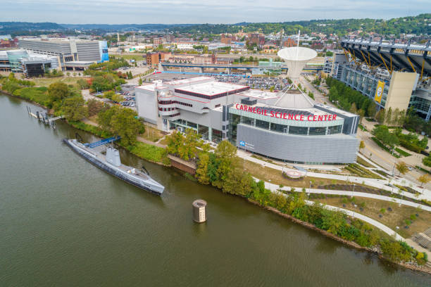

Carnegie Science Center Plans $90M Expansion on Pittsburgh's North Shore
The Carnegie Science Center, a beacon of scientific exploration and education in Pittsburgh, is embarking on an ambitious $90 million expansion project that promises to further elevate its status as a premier destination for learning and discovery. Located on the city's vibrant North Shore, the Science Center has long been a hub of innovation and inspiration, attracting visitors of all ages with its interactive exhibits, immersive experiences, and educational programs.
Central to the expansion plans is the addition of new exhibit galleries, interactive displays, and educational spaces that will enhance the visitor experience and provide opportunities for hands-on learning and exploration. These new attractions will cover a wide range of topics, from space exploration and robotics to environmental science and sustainability, ensuring that visitors of all interests and backgrounds find something to captivate their curiosity.
In addition to expanding its exhibit offerings, the Science Center plans to enhance its facilities and amenities to better accommodate its growing audience. This includes upgrades to visitor services areas, such as ticketing and guest relations, as well as improvements to accessibility, parking, and outdoor spaces to ensure a seamless and enjoyable experience for all visitors.
Furthermore, the expansion project presents an opportunity for the Science Center to deepen its engagement with the local community and forge new partnerships with schools, universities, and cultural organizations. By collaborating with educators and experts in various fields, the Science Center aims to develop innovative programming and resources that support STEM education and inspire the next generation of scientists, engineers, and innovators.
The expansion project is also expected to have a significant economic impact on the North Shore and the broader Pittsburgh region. In addition to creating jobs during the construction phase, the increased visitor traffic and tourism revenue generated by the expanded Science Center are likely to benefit local businesses, restaurants, and hotels, contributing to the overall vitality and prosperity of the area.
As the Science Center explores options for its expansion, it is working closely with architects, designers, and other stakeholders to develop a plan that maximizes the potential of its facilities and aligns with its mission and values. This collaborative approach ensures that the expansion project will not only enhance the visitor experience but also create a lasting legacy for the community.
While specific details of the expansion are still being finalized, the Science Center aims to complete the project within the next few years, with construction expected to begin in the near future. In the meantime, visitors can look forward to new exhibits, programs, and events that will continue to inspire wonder and curiosity at the Carnegie Science Center.
In conclusion, the Carnegie Science Center's $90 million expansion project represents a significant investment in the future of scientific education and exploration in Pittsburgh. By enhancing its facilities, expanding its offerings, and deepening its engagement with the community, the Science Center is poised to create a dynamic and immersive learning environment that ignites curiosity, fosters creativity, and inspires discovery for generations to come.